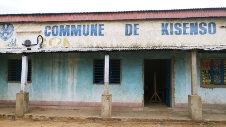
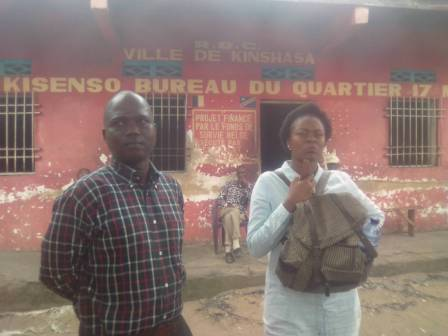
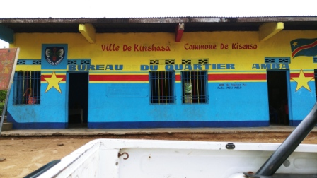
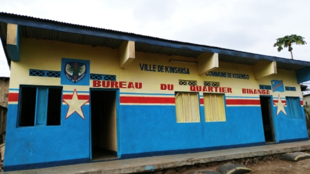
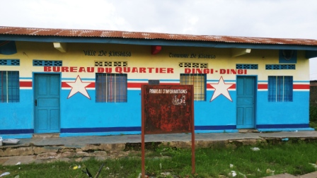
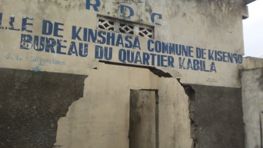
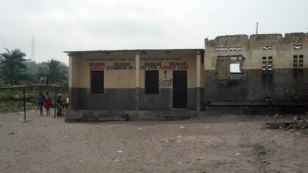
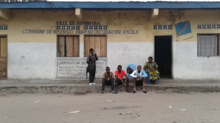
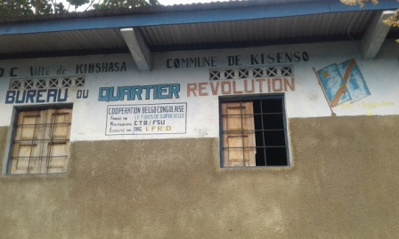

Project Open Cities Kinshasa
Commune de Matete
Matete est une commune du sud de la ville de Kinshasa en République démocratique du Congo. Elle est l'un des nouveaux lieux de peuplement, entourée des communes de Lemba, Kisenso, Limete et Ndjili. Elle est séparée de la commune de Ndjili par une rivière qui porte également le nom de sa commune voisine (Ndjili). Elle est composée de trente six quartiers dont le plus grand est Maindombe qui comporte deux plus grandes écoles publiques. Le quartier Mutoto est le siège administratif de la municipalité.

Commune de Kisenso
Kisenso ou Kinsenso est une commune du sud de la ville de Kinshasa en République démocratique du Congo. Elle est l'un des nouveaux lieux de peuplement, situé dans la zone des collines au sud de Lemba et Matete. Elle est délimitée à l’ouest par la rivière Matete, à l’est par la rivière Ndjili et au sud par la rivière Kwambila
17 Mai
Chwaka Bay is an intertidal water body on the east coast of Unguja Island, Zanzibar, Tanzania. The area contains all three critical marine habitats namely mangroves, seagrasses and coral reefs; its mangrove being the largest single mangrove forest in Unguja Island. The ecological importance of Chwaka Bay cannot be overestimated.
Amba
Chwaka Bay is an intertidal water body on the east coast of Unguja Island, Zanzibar, Tanzania. The area contains all three critical marine habitats namely mangroves, seagrasses and coral reefs; its mangrove being the largest single mangrove forest in Unguja Island. The ecological importance of Chwaka Bay cannot be overestimated.
Bikanga
This is a palace that was built for Mwinyi Mkuu (the Great Chief) Ahmed Bin Mohammed Hassan. He was the Swahili Ruler of Zanzibar in the 18th Century, before the Oman occupation. The main walls of the palace are still standing. The original royal splendor, pillars, stair cases, old passages and archways are all visible today.
Dingi-Dingi
CLOSED for renovation. A landmark building in Stone Town, Zanzibar. It is the largest and tallest building of Stone Town and occupies a prominent place facing the Forodhani Gardens on the old town's seafront, in Mizingani Road. It is located between the Old Fort and the Palace Museum (and former Sultan's Palace). It is one of six palaces built by Barghash bin Said, second Sultan of Zanzibar, and it is said to be located on the site of the 17th-century palace of Zanzibari queen Fatuma. The House of Wonders currently houses the Museum of History and Culture of Zanzibar and the Swahili Coast.
Kabila
Prison (Changuu) Island a small island 5.6 km north-west of Stone Town, Unguja, Zanzibar. The island saw use as a prison for rebellious slaves in 1860s and also functioned as a coral mine. The British First Minister of Zanzibar, Lloyd Mathews, purchased the island in 1893 and constructed a prison complex there. No prisoners were ever housed on the island and instead it became a quarantine station for yellow fever cases. More recently, the island has become a government-owned tourist resort and houses a collection of endangered Aldabra giant tortoises which were originally a gift from the British governor of the Seychelles.
Kisenso Gare
Prison (Changuu) Island a small island 5.6 km north-west of Stone Town, Unguja, Zanzibar. The island saw use as a prison for rebellious slaves in 1860s and also functioned as a coral mine. The British First Minister of Zanzibar, Lloyd Mathews, purchased the island in 1893 and constructed a prison complex there. No prisoners were ever housed on the island and instead it became a quarantine station for yellow fever cases. More recently, the island has become a government-owned tourist resort and houses a collection of endangered Aldabra giant tortoises which were originally a gift from the British governor of the Seychelles.
Nsola
Prison (Changuu) Island a small island 5.6 km north-west of Stone Town, Unguja, Zanzibar. The island saw use as a prison for rebellious slaves in 1860s and also functioned as a coral mine. The British First Minister of Zanzibar, Lloyd Mathews, purchased the island in 1893 and constructed a prison complex there. No prisoners were ever housed on the island and instead it became a quarantine station for yellow fever cases. More recently, the island has become a government-owned tourist resort and houses a collection of endangered Aldabra giant tortoises which were originally a gift from the British governor of the Seychelles.
Révolution
Prison (Changuu) Island a small island 5.6 km north-west of Stone Town, Unguja, Zanzibar. The island saw use as a prison for rebellious slaves in 1860s and also functioned as a coral mine. The British First Minister of Zanzibar, Lloyd Mathews, purchased the island in 1893 and constructed a prison complex there. No prisoners were ever housed on the island and instead it became a quarantine station for yellow fever cases. More recently, the island has become a government-owned tourist resort and houses a collection of endangered Aldabra giant tortoises which were originally a gift from the British governor of the Seychelles.
Regideso
Prison (Changuu) Island a small island 5.6 km north-west of Stone Town, Unguja, Zanzibar. The island saw use as a prison for rebellious slaves in 1860s and also functioned as a coral mine. The British First Minister of Zanzibar, Lloyd Mathews, purchased the island in 1893 and constructed a prison complex there. No prisoners were ever housed on the island and instead it became a quarantine station for yellow fever cases. More recently, the island has become a government-owned tourist resort and houses a collection of endangered Aldabra giant tortoises which were originally a gift from the British governor of the Seychelles.